Cliente
Comunicação sem padrão, redes abandonadas e pouca clareza sobre como comprar e quando a mercadoria chega.
Um atacado de bebidas, três tipos de usuário e uma empresa redesenhada por dentro.
Estou na GP Atacado desde o começo, ao lado do dono. A partir de fevereiro de 2025, com a formação em UX, passei a tratar os problemas do dia a dia como problemas de experiência e a liderar as mudanças: na marca, na conversa com o cliente e nos controles internos.
A GP Atacado vende bebidas só para empresas com CNPJ em Brasília e entrega no comércio do cliente.
Os pedidos chegam principalmente pelo WhatsApp. Estou na empresa desde o começo, trabalhando ao lado do dono.
Em fevereiro de 2025, ao iniciar a formação em UX, passei a enxergar o que já acontecia lá dentro como problemas de experiência. Foi aí que comecei a defender e liderar as mudanças.
Três pessoas sofriam com a mesma bagunça, cada uma de um jeito.
Comunicação sem padrão, redes abandonadas e pouca clareza sobre como comprar e quando a mercadoria chega.
Controles feitos à mão (ponto, saída e entrada de carga, cobrança) e nenhum responsável claro por cada etapa.
O dono sem uma visão simples dos números e das prioridades para decidir o que fazer primeiro.
Quatro frentes, cada uma ligada a uma das dores.
Cores, tipografia e componentes com foco em acessibilidade e em falar com o cliente de forma clara: o que é, quanto custa, como pedir.
Ver antes e depoisCards padronizados por segmento e por data festiva, para qualquer pessoa da equipe produzir sem perder a identidade.
Ver o sistema de cardsContratamos uma equipe de disparo de mensagens e um CRM. O anúncio solto na comunidade deu lugar à conversa no privado com cada cliente.
Cinco ferramentas feitas com Claude no lugar de controles manuais: ponto, carga, financeiro, prioridades e cobrança.
Ver as ferramentasAs redes estavam abandonadas e sem filtro de conteúdo. Criei uma linguagem visual única, com ritmo, hierarquia e legibilidade.
Arraste o controle (ou use as setas do teclado) para comparar. Números de telefone e datas foram ocultados.
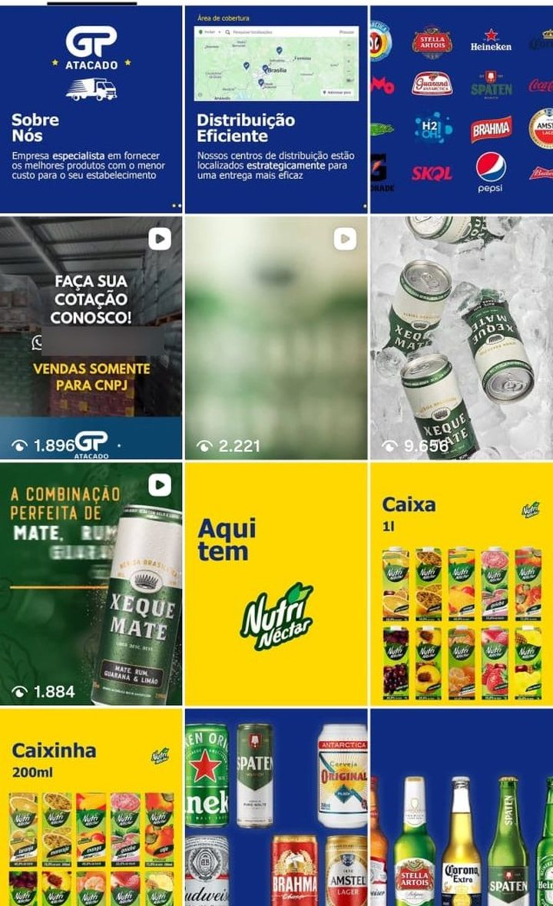
Os destaques antigos davam o dado e paravam ali. Os novos respondem à dúvida do cliente e dizem o próximo passo.
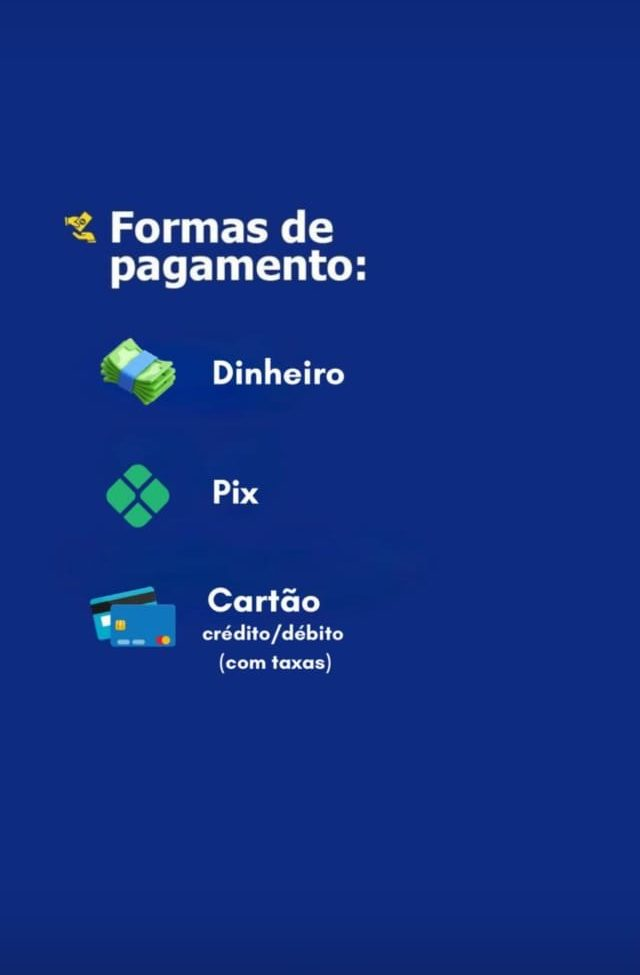
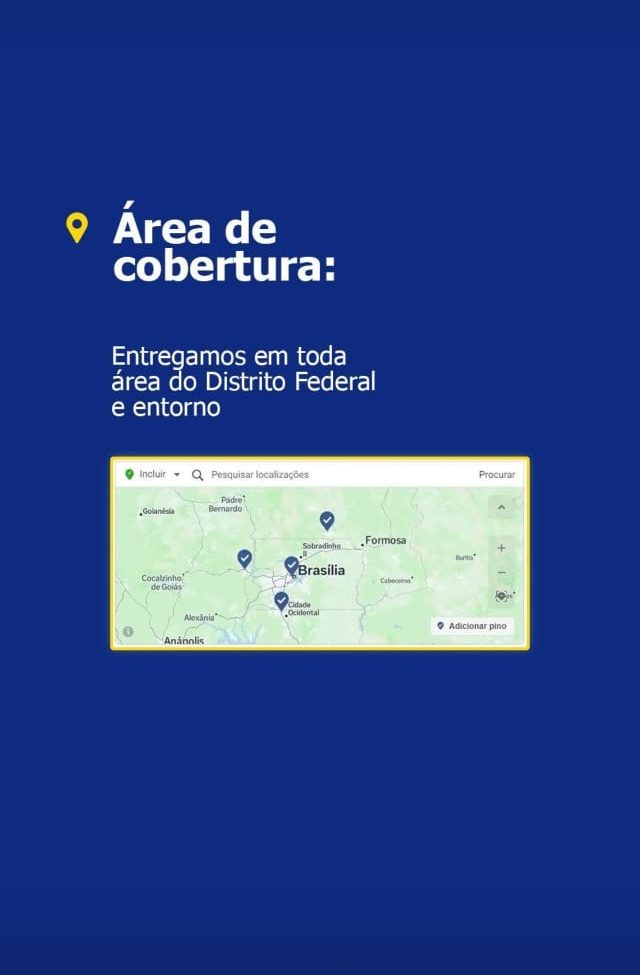
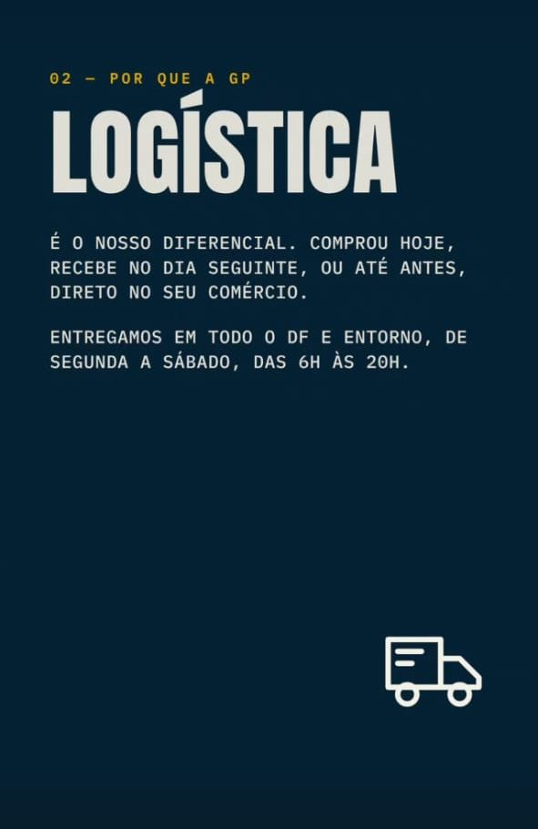
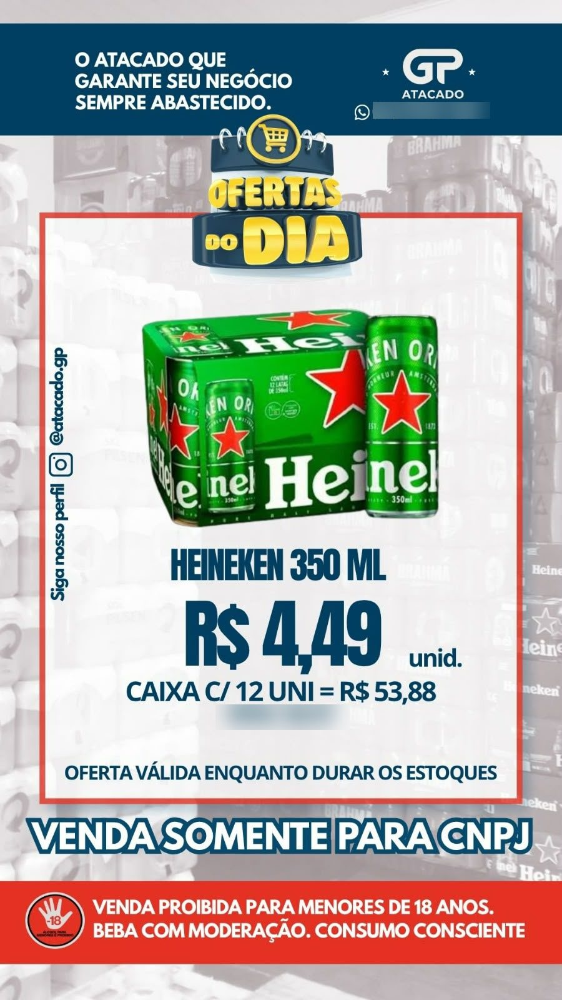
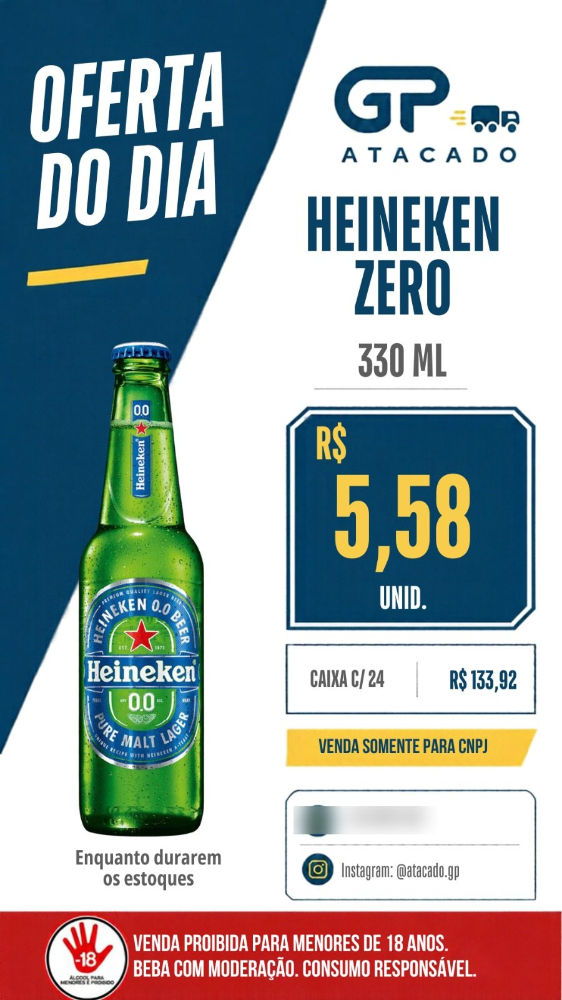
No card antigo, preço, validade, avisos e marca disputam a atenção. No novo, a leitura segue uma ordem: produto, preço da unidade, condição da caixa e regra de venda. O aviso legal continua lá, mas no lugar dele.
A série “Por que a GP?” em stories responde às dúvidas que mais apareciam no WhatsApp: logística, preço, como comprar e quem pode comprar. Menos dúvida, mais pedido.
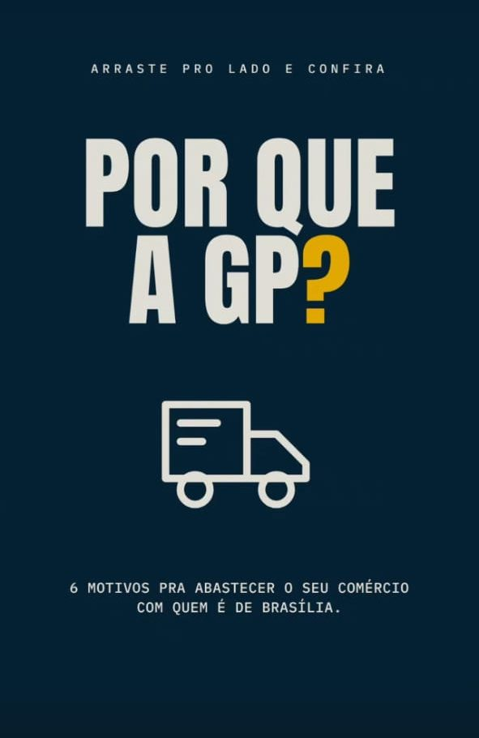
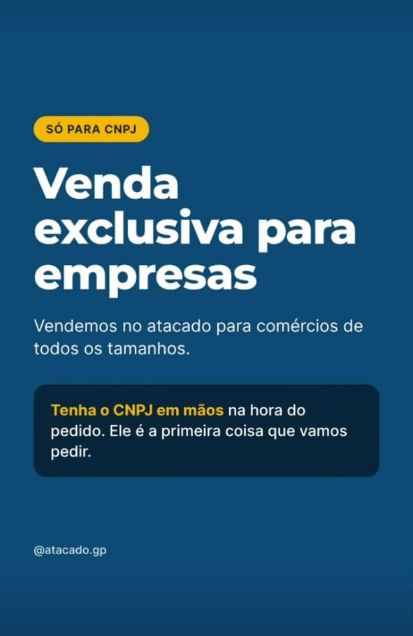
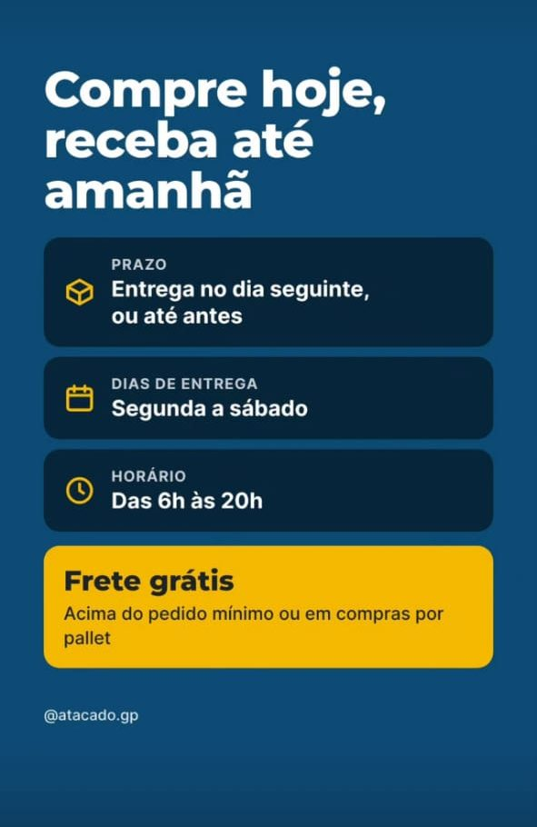
A mesma série no feed. Cada lâmina tem um número, um título curto e um detalhe visual que leva para a próxima: a estrada continua de uma imagem para a outra.
O logo foi redesenhado e virou o ponto de partida do resto do sistema.
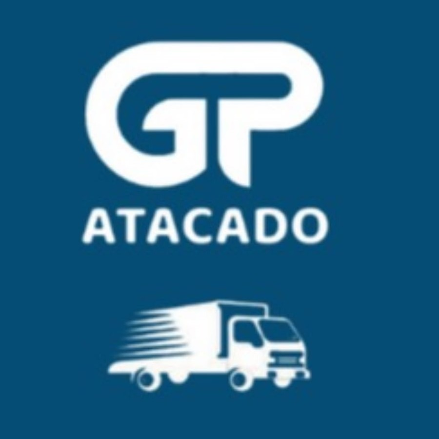
Um padrão por segmento e por data festiva: as mesmas cores, a mesma faixa de aviso, o mesmo lugar para o preço.
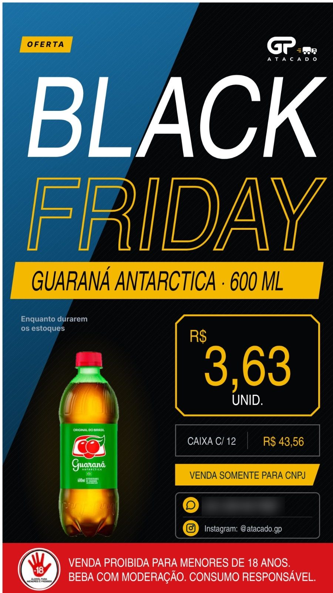
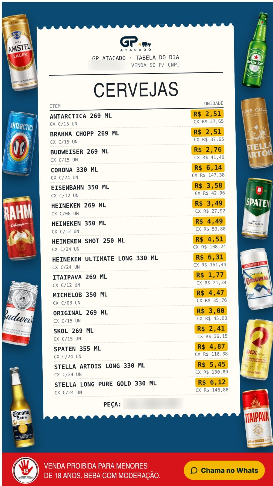
Controles que eram feitos à mão viraram ferramentas simples, cada uma com um responsável. Todas feitas com Claude.
Nomes de funcionários e clientes e valores financeiros reais estão ocultos.
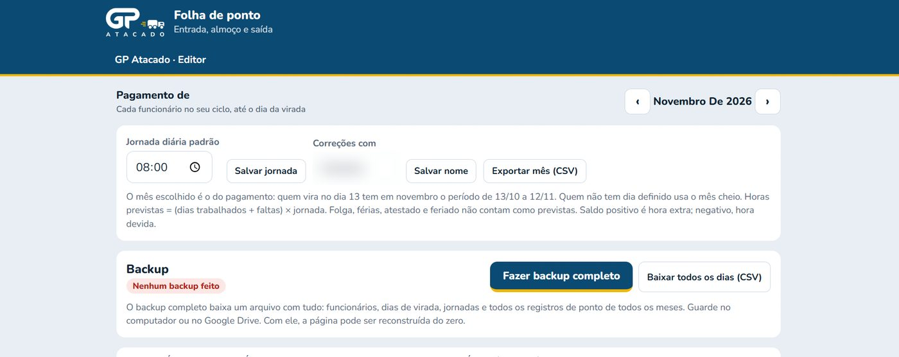
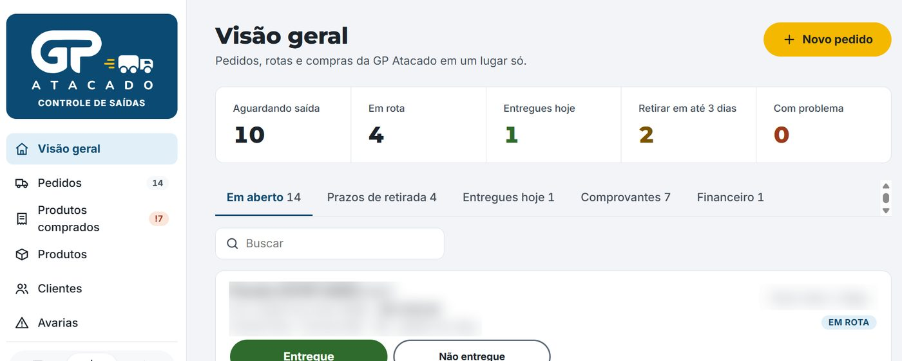
Feito para o dono. Valores ocultos nesta imagem.
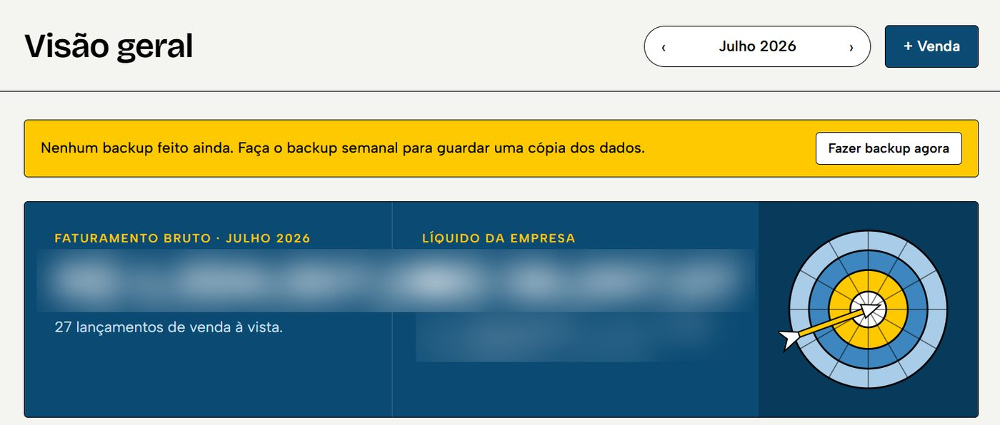
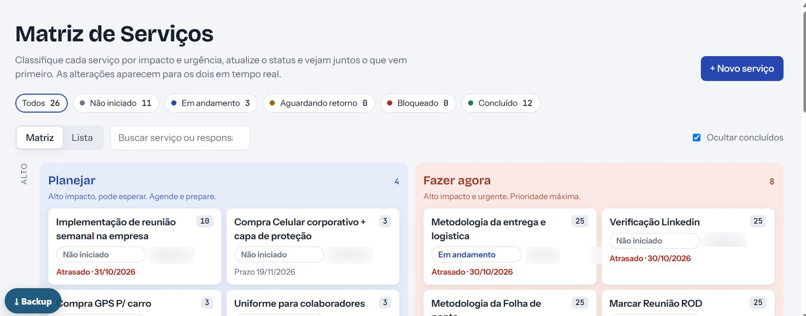
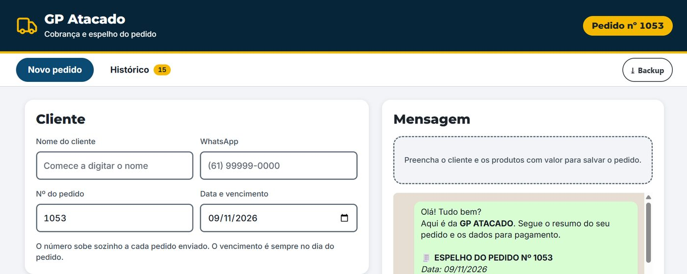
+20%
de aumento nas vendas, comparando 2026 com 2025.
Design acontece onde o problema está: no balcão, na carga, no WhatsApp.
Aprendi a medir a mudança pelo comportamento do cliente e pela rotina do time, e não pela estética.